배관기능장 (2009-07-12 기출문제)
1과목: 임의구분
1. 수도본관에서 옥상 탱크까지 수직 높이가 20m이고 관마찰손실율이 20%일 때 옥상 탱크로 수도를 보내기 위하여 수도본관에서 필요한 최소 수압은 몇 MPa이상인가?
- 0.024
- 0.24
- 0.34
- 2.40
(정답률: 83%)

2. 인접 건물에서 화재가 발생했을 때 인화를 방지하기 위해 창문, 출입구, 처마 끝에 물을 뿌려 수막을 형성함으로서 본 건물의 화재 발생을 예방하는 설비는?
- 스프링쿨러
- 드렌처
- 소화전
- 방화전
(정답률: 97%)
3. 증기난방과 비교하여 온수난방의 특징 설명중 잘못된 것?
- 난방부하의 변동에 따라서 열량조절이 용이하다.
- 온수 보일러는 증기보일러보다 취급이 용이하다.
- 설비비가 많이 드는 편이나 비교적 안전하여 주택 등에 적합하다.
- 예열 시간이 짧아서 단시간에 사용하기 편리하다.
(정답률: 79%)
4. 부식, 마모 등으로 작은 구멍이 생겨 유체가 누설될 경우 고무제품의 각종 크기로 된 볼을 일정량 넣고, 유체를 채운 후 펌프를 작동시켜 누설부분을 통과하려는 볼이 누설부분에 정착, 누설을 미량이 되게 하거나 정지시키는 응급 조치법은?
- 코킹법
- 스토핑 박스법
- 호트 패킹법
- 인젝션법
(정답률: 73%)
5. 파이프 래크상의 배관 배열방법을 설명한 것으로 거리가 먼 것은?
- 인정하는 파이프외측과외측의 간격을 75mm 이상으로한다
- 고온 배관에서 주로 사용하는 루프형 신축관은 파이프래크 상의 다른 배관보다 500-700mm정도 높게 배관한다.
- 관 지름이 클수록 온도가 높을수록 파이프 래크상의 중앙에 배열한다.
- 파이프 래크의 폭은 파이프에 보온, 보냉하는 경우는 보온, 보냉하는 두께를 가산하여 결정한다.
(정답률: 84%)
6. 공기 여과기의 종류 중 담배 연기나 5μm이하의 입자에 가장 효과가 있는 여과기는?
- 유닛형 건식 여과기
- 점성식 여과기
- 전자식 여과기
- 일반 건식 여과기
(정답률: 84%)
7. 가스홀더에서 직접 홀더압을 이용해서 공급하는 가스공급 방법으로 대구경관이 필요하며 비용도 상승하게 되어 공급범위가 한정된 가스공급방식인 것은?
- 중앙 공급방식
- 고압 공급방식
- 혼합 공급방식
- 저압 공급방식
(정답률: 67%)
8. 기계적(물리적) 세정방법에 대한 설명 중 틀린 것은?
- 물 분사기(water jet)세정법: 고압펌프를 설치 압송 하는 제트차를 사용해 고압의 가스 상태로 분사하여 스케일을 제거하는 방법
- 피그(pig)세정법: 탑조류, 열교환기, 가열로, 보일러배관에 사용하는 방법으로 세정액을 순환시켜 세정하는 방법
- 샌드 블라스트(sand blast)세정법: 공기압송장치 등으로 모래를 분사하여 스케일을 제거하는 방법
- 숏 블라스트(shot blast)세정법: 공기압송장치 등으로 강구(steel ball)를 분사하여 스케일을 제거하는 방법
(정답률: 77%)
9. 시퀀스 제어(Sequence control)를 설명한 것으로 가장 적절한 것은?
- 미리 정해놓은 순서에 따라 제어의 각 단계를 순차적으로 행하는 제어
- 미리 정해놓은 순서에 관계없이 불규칙적으로 제어의 각 단계를 행하는 제어
- 출력신호를 입력신호로 되돌아오게 하는 되먹임에 의하여 목표값에 따라 자동적으로 제어
- 입력신호를 출력신호로 되돌아오게 하는 피드백에 의하여 목표값에 따라 자동적으로 제어
(정답률: 92%)
10. 설정한 목표값을 경계로 가동, 정지의 2가지 동작 중 하나를 취하여 동작시키는 제어는?
- 2위치 동작
- 다위치 동작
- 비례 동작
- PID동작
(정답률: 85%)
11. 용접 중 일산화탄소에 의한 중독 위험성이 가장 많은 것은?
- 서브머지드 용접
- 수동교류 용접
- CO2용접
- 불활성 가스 아크 용접
(정답률: 94%)
12. 동력나사 절삭기 사용 시 안전수칙에 관한 설명으로 틀린 것은?
- 관을 척에 확실히 고정시킨다.
- 절삭된 나사부는 나사산이 잘 성형되었는지 맨손으로 만지면서 확인해 본다.
- 나사 절삭 시에는 주유구에 의해 계속 절삭유를 공급되도록 한다.
- 나사 절삭기의 정비 수리 등은 절삭기를 정지시킨 다음 행한다.
(정답률: 95%)
13. 교류용접기는 무부하 전압이 70-80V정도로 비교적 높아 감전의 위험이 있으므로 이를 방지하기 위한 장치로 사용하는 것은?
- 리미트 스위치
- 2차 권선 장치
- 전격 방지 장치
- 중성점 접지 장치
(정답률: 88%)
14. LPG집단공급시설(배관 포함)의 기밀시험의 기준 압력은 몇MPa인가? (단, 프로판 가스를 기준으로 한다. )
- 1.6
- 1.8
- 16
- 18
(정답률: 63%)
15. 제어요소 중 입력 변화와 동시에 출력이 시간지연 없이 목표치에 동시에 변화하며, 시간지연이 없다는 의미에서 0차 요소라고도 하는 것은?
- 적분요소
- 일차지연요소
- 고차지연요소
- 비례요소
(정답률: 82%)
16. 압축 공기 배관의 부품에 들어가지 않는 것은?
- 세퍼레이터(separator)
- 공기 여과기(air filters)
- 애프터 쿨러(after cooler)
- 사이어미즈 커넥션(siamese connection)
(정답률: 75%)
17. 전기집집장치의 특성에 관한 설명 중 틀린 것은?
- 집진효율이 99.9% 이상이다.
- 압력손실이 적어 송풍기에 따른 동력비가 적게든다.
- 항진가스의 처리 가스량이 적어 소용량 집진시설에 적합하다.
- 각종 공기조화 장치나 병원의 수술실 등에서 많이 사용된다.
(정답률: 74%)
18. 수격작용(water hammering)의 방지책이 아닌 것은?
- 관로에 조압수조를 설치한다.
- 관경을 작게 하고, 관내 유속을 낮춘다.
- 플라이휠을 설치하여 펌프 속도의 급변을 막는다.
- 밸브는 펌프 송출구 가까이에 설치하고, 밸브를 적당히 제어한다.
(정답률: 68%)
19. 설비 자동화 제어장치의 신호 전송 방법에서 최대 전송거리를 비교한 것으로 맞는 것은?
- 공압식＜유압식＜전기식
- 전기식＜유압식＜공압식
- 공압식＜전기식＜유압식
- 유압식＜전기식＜공압식
(정답률: 88%)
20. 풍량은 8m3/min이고 풍속은 10m/min 일 때 집진용 덕트의 크니(단면적)는 몇 m2 인가? (단, 마찰 손실에 대한 영향은 무시한다.)
- 8
- 80
- 0.8
- 1
(정답률: 55%)
2과목: 임의구분
21. 그림과 같이 배관에 직접 접합하는 배관 지지대로서 주로 배관의 수평부나 곡관부에 사용되는 지지장치 명칭은?
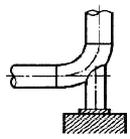
- 파이프 슈(pipe shoe)
- 앵커(anchor)
- 리지드 서포트(rigid support)
- 콘스탄트 행거(Constant hanger)
(정답률: 81%)
22. 최고 사용압력이 6.5MPa의 배관에서 SPPS을 사용하는 경우, 인장 강도가 380MPa 일 때 안전율을 4로 하면 다음 스케줄 번호 중 가장 적합한 것은?
- 40
- 80
- 100
- 120
(정답률: 73%)
23. 일반적으로 PS관이라고 불리며, PS강선을 긴장해서 감아 붙이 뒤 관의 원주방형으로 압축 응력을 부여하여 내외압에 의해서 일어나는 인장응력과 상쇄할 수 있게 제작된 특수관은?
- 규소 청동관
- 폴리부틸렌관
- 석면 시멘트관
- 프리스트레스드 콘트리트관
(정답률: 77%)
24. 비중이 작고 열 및 전기의 전도도가 높으며 용접이 잘 되고 고순도의 것일수록 내식성 및 가공성이 좋아지므로 이음매 없는 관과 용접관이 있고 화학공업용 배관, 열교환기 등에 적합한 것은?
- 석면 시멘트관
- 염화 비닐관
- 강관
- 알루미늄관
(정답률: 79%)
25. 신축이음에서 고압에 견디며 고장도 적으나, 설치공간을 많이 차지하며 고압증기의 옥외 배관에 많이 쓰이는 것은?
- 루프형
- 슬리브형
- 벨로스형
- 볼조인트형
(정답률: 82%)
26. 천연고무와 비슷한 성질을 가진 합성고무로서 천연고무보다 더 우수한 성질을 가지고 있으며, 내열도는 약 -40~121℃사이의 값을 가지고 있는 패킹 재료는?
- 펠트
- 석면
- 네오프렌
- 테프론
(정답률: 84%)
27. 유리면 벌크를 입상(granule)화시킨 제품으로 주택의 천정, 마루바닥의 보온 단열 등에 사용되며 사용온도가 500℃ 인 보온재는?
- 산면(loose wool)
- 블로 울(blow wool)
- 펠트(felt)
- 탄산 마그네슘(MgCO3)
(정답률: 64%)
28. 폴리부틸렌(PB)관 이음쇠에 관한 설명으로 올바른 것은?
- PB관에 PB관을 연결시 나사이음이나 용접이음이 필요하다.
- 이음쇠 안쪽에 내장된 그래브링과 0링을 이용한 용접접합이다.
- 이종관과의 접합시는 커넥터 및 어댑터를 사용, 나사이음을 한다.
- 스터드 앤드를 이용한 플랜지 이음을 하는 것이 일반적이다.
(정답률: 47%)
29. 증기트랩(steam trap)을 그 작동원리에 따라 분류하면 온도 조절식 트랩, 열역학적 트랩, 그리고 기계적 트랩으로 분류한다. 이 중 열역학적 트랩에 해당하는 것은?
- 벨로우즈형
- 디스크형
- 버킷형
- 바이메탈형
(정답률: 57%)
30. 밸브 내부는 버퍼(buffer)와 스프링(spring)이 설치되어 있고 바이패스 밸브 기능도 하는 체크밸브는?
- 리프트형(lift type) 체크밸브
- 스윙형(swing type) 체크밸브
- 푸트형(foot type) 체크밸브
- 해머리스형(hammer less type) 체크밸브
(정답률: 69%)
31. 플랜지를 관과 이음하는 방법에 따라 분류할 때 이에 해당하지 않는 것은?
- 소켓 용접형
- 랩 조인트 형
- 나사 이음형
- 바이패스형
(정답률: 84%)
32. 배관계획에 있어 관 종류의 선택시 고려해야 할 조건 중 가장 거리가 먼 것은?
- 관내 유체의 화학적 성질
- 관내 유체의 온도
- 관내 유체의 압력
- 관내 유체의 경도
(정답률: 83%)
33. 일반적으로 배관계에 발생하는 진동을 억제하는 경우에 사용하는 배관 지지장치로 가장 적합한 것은?
- 스토퍼
- 리지드 행거
- 앵커
- 브레이스
(정답률: 80%)
34. 강관의 종류와 KS 규격 기호가 맞는 것은?
- SPHT: 고압 배관용 탄소강관
- SPPH: 고온 배관용 탄소강관
- STHA: 저온 배관용 탄소강관
- SPPS: 압력 배관용 탄소강관
(정답률: 82%)
35. 펌프의 배관에 관한 설명으로 틀린 것은?
- 토출쪽은 압력계를 설치한다.
- 흡입쪽은 진공계나 연성계를 설치한다.
- 흡입쪽 수평관은 펌프쪽으로 올림구배한다.
- 스트레이너는 펌프 토출쪽 끝에 설치한다.
(정답률: 89%)
36. 강관을 4조각 내어 중심각이 90° 마이터관을 만들려 할 때 절단각은 몇 도 인가?
- 7.5
- 11.25
- 15
- 22.5
(정답률: 73%)
37. 비금속 배관재료에 대한 일반적인 이음방법이 올바르게 짝지어진 것은?
- 경질 염화비닐 관 - 기볼트 이음
- 석면 시멘트 관 - 고무링 이음
- 폴리 에틸렌 관 - 용착 슬리브 이음
- 콘크리트 관 - 심플렉스 이음
(정답률: 82%)
38. 동관의 납땜 이음시 사용하는 공구로서 절단된 관 끝부분의 단면을 정확한 원으로 만들기 위하여 사용하는 공구는?
- 플레어링 툴
- 사이징 툴
- 봄볼
- 턴핀
(정답률: 90%)
39. 동력나사 절삭기에 관한 설명 중 옳은 것은?
- 다이헤드식은 관의 절단, 나사절삭은 가능하나 거스러미 제거 작업은 못한다.
- 오스터식은 지지로드를 이용하여 절삭기를 수동으로 이송 하며 구조가 복잡하고, 관경이 큰 것에 주로 사용된다.
- 오스터식, 호브식, 램식, 다이헤드식의 네가지 종류가 있다.
- 호브식은 나사절삭용 전용 기계이지만 호브와 파이프커터를 함께 장치하면 관의 나사절삭과 절단을 동시에 할수 있다.
(정답률: 80%)
40. 콘크리트관의 콤포 이음시 시멘트와 모래의 배합비인 콤포 배합비(시멘트:모래)와 수분의 양으로 가장 적합한 것은?
- 1:2이고 수분의 양은 약 17%
- 1:1이고 수분의 양은 약 17%
- 1:2이고 수분의 양은 약 45%
- 1:1이고 수분의 양은 약 45%
(정답률: 89%)
3과목: 임의구분
41. 주철 파이프 접합시 녹은 납이 비산하여 몸에 화상을 입게 되는 주원인은?
- 접합부에 수분이 있기 때문에
- 녹은납의 온도가 낮기 때문에
- 녹은납의 온도가 높기 때문에
- 인납 성분에 Pb함량이 너무 많기 때문에
(정답률: 94%)
42. 열량의 단위인 1[J]의 설명으로 가장 정확한 것은?
- 1N의 힘을 작용시켜 1m이동시켰을 때 일에 상당하는 열량이다.
- 1Pa의 힘을 작용시켜 1m 이동시켰을 때 일에 상당하는 열량이다.
- 매초 1W의 공률을 발생하는 힘이다.
- 매초 1Pa의 압력을 발생하는 힘이다.
(정답률: 76%)
43. 용접에서 피복제의 중요한 작용이 아닌 것은?
- 용착금속에 필요한 합금 원소를 첨가시킨다.
- 아크를 안정하게 한다.
- 스패터의 발생을 적게 한다.
- 용착 금속을 급냉시킨다.
(정답률: 87%)
44. 정격2차 전류 200A, 정격 사용률이 50%인 아크 용접기로 150A의 용접전류를 사용시 허용 사용률은 약 몇%인가?
- 53
- 65
- 71
- 89
(정답률: 50%)
45. 토치 대신 가늘고 긴 강관(안지름 3.2mm~6mm, 길이 1.5~3m)을 사용하여 이 강관에 산소를 공급하여 그 강관이 산화 연소할 때의 반응열로 금속을 절단하는 방법은?
- 가스 가우징(gas gouging)
- 스카핑(scarfing)
- 산소창절단(oxygen lance cutting)
- 산소아크절단(oxygen arc cutting)
(정답률: 62%)
46. 수냉 동판을 용접부의 양편에 부착하고 용융된 슬래그속에서 전극와이어를 연속적으로 송급하여 용융슬래그 내를 흐르는 저항열에 의하여 전극와이어 및 모재를 용융접합시키는 용접법은?
- 일렉트로 슬래그 용접
- 서브머지드 아크 용접
- 테르밋 용접
- 전자빔 용접
(정답률: 57%)
47. 그림과 같은 입체배관도에 대한 평면도로 맞는 것은?
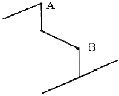
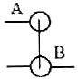
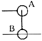
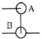
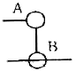
(정답률: 62%)
48. 다음의 계장계통 도면에서 FRC가 의미하는 것은?
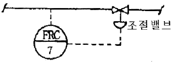
- 수위 기록 조절계
- 유량 기록 조절계
- 압력 기록 조절계
- 온도 기록 조절계
(정답률: 84%)
49. 입체 배관도로 작도하는 도면으로서 배관의 일부분만을 작도한 도면으로 부분제작을 목적으로 하는 도면은?
- 입면 배관도
- 입체 배관도
- 부분 배관도
- 평면 배관도
(정답률: 93%)
50. 용접기호 중 현장 용접기호 표시 기호는?
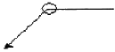
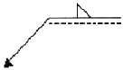
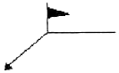
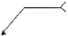
(정답률: 72%)
51. 배관의 라인번호 결정은 배관도면의 작도와 재료의 집계나 현장조립 및 보전에 효과적이므로 일관성을 갖는 것이 중요하다. 아래의 라인번호에서 틀리게 설명된 것은?
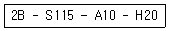
- 2B: 관의 호칭지름
- S115: 유체의 종류ㆍ상태, 배관계의 식별(배관번호)
- A10: 배관계의 시방
- H20: 관의 종류
(정답률: 65%)
52. 가상선의 용도로 틀린 것은?
- 인접 부분의 참고로 표시하는데 사용한다.
- 가공 전 또는 가공 후의 모양을 표시하는데 사용 한다.
- 도시된 단면의 앞 쪽에 있는 부분을 표시하는데 사용한다.
- 대상물의 보이지 않는 부분의 모양을 표시하는데 사용한다.
(정답률: 61%)
53. 아래와 같은 배관도시 기호의 종류는?
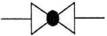
- 글로브 밸브
- 밸브 일반
- 게이트 밸브
- 전동 밸브
(정답률: 85%)
54. 파이프 내에 흐르는 유체의 종류별 표시기호 설명으로 틀린 것은?
- 공기: A
- 연료 가스: K
- 연료유: 0
- 증기: S
(정답률: 92%)
55.
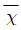
관리도에서 관리상한이 22.15, 관리하한이 6.85,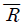
=7.5일 때 시료군의 크기(n)는 얼마인가? (단, n=2일 때, A2=1.88, n=3일 때 A2=1.02, n=4일 때 A2=0.73, n=5일 때, A2=0.58이다. )- 2
- 3
- 4
- 5
(정답률: 52%)
56. 200개 들이 상자가 15개 있다. 각 상자로부터 제품을 랜덤하게 10개씩 샘플링 할 경우, 이러한 샘플링 방법을 무엇이라 하는가?
- 계통 샘플링
- 취락 샘플링
- 층별 샘플링
- 2단계 샘플링
(정답률: 80%)
57. 어떤 측정법으로 동일 시료를 무한횟수 측정하였을 때 데이터 분포의 평균치와 모집단 참값과의 차를 무엇이라 하는가?
- 편차
- 신뢰성
- 정확성
- 정밀도
(정답률: 78%)
58. 다음 중 신제품에 대한 수요예측방법으로 가장 적절한 것은?
- 시장조사법
- 이동평균법
- 지수평활법
- 최소자승법
(정답률: 90%)
59. ASME(American Society of Mechanical Engineers)에서 정의하고 있는 제품 공정 분석표에 사용되는 기호 중 “저장(storage)"을 표현한 것은?
- ○
- D
- □
- ▽
(정답률: 86%)
60. 다음 중 사내표준을 작성할 때 갖추어야 할 요건으로 옳지 않은 것은?
- 내용이 구체적이고 주관적일 것
- 장기적 방침 및 체계하에서 추진할 것
- 작업표준에는 수단 및 행동을 직접 제시할 것
- 당사자에게 의견을 말하는 기회를 부여하는 절차로 정할 것
(정답률: 75%)
수압 = 밀도 × 중력가속도 × 수직 높이 - 관마찰손실
여기서 밀도는 물의 밀도인 1000kg/m³, 중력가속도는 9.8m/s²이다. 관마찰손실은 수도본관에서 옥상 탱크까지의 거리와 관경, 유속 등에 따라 달라지는데, 이 문제에서는 20%로 주어졌다.
따라서 수압 = 1000 × 9.8 × 20 - (20/100) × 1000 × 9.8 × 20 = 19600 - 3920 = 15680 Pa = 0.1568 MPa
최소 수압은 몇 MPa 이상이어야 하므로, 0.24 MPa가 정답이 된다.